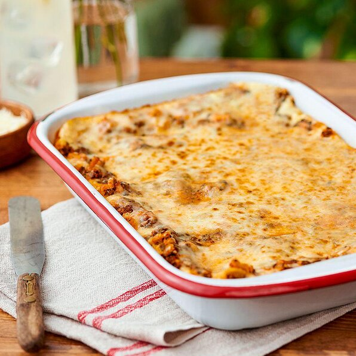

Veggie Lasagna

This delicious take on a familiar favorite features lots of veggies and cheese
Ingredients
16 ounces fat free cottage cheese
10 ounces fresh, chopped spinach
2 eggs, lightly beaten
8 ounces shredded mozzarella
1 cup finely shredded parmesan, divided
1/2 teaspoon salt
1/2 teaspoon black pepper
2 tablespoons olive oil
1 1/4 cups chopped onion
15 ounces Pinto Beans, rinsed and drained
3 cloves garlic, minced
1 teaspoon fresh, chopped oregano
1 teaspoon fresh, chopped basil
1/2 teaspoon fresh, chopped thyme
4 cups tomato pasta sauce
1 package oven ready lasagna noodles
Steps
- Preheat oven to 375 degrees F. Spray the inside of a 13 x 9-inch pan with non-stick cooking spray.
- Drain the cottage cheese in a strainer for 15 minutes to remove any excess liquid; set aside. Press the thawed spinach in a strainer with a spoon or paper towels to remove excess water; set aside.
- Combine eggs, cottage cheese, mozzarella, 1/4 cup Parmesan cheese, salt and black pepper in a medium bowl; set aside.
- Heat olive oil in a large non-stick skillet over medium-high heat until hot. Add onion and sauté until soft. Add the drained spinach, beans, garlic, oregano, basil and thyme, and sauté five minutes. Add pasta sauce and stir for a few more minutes until combined well.
- Spread 1/3 of the pasta sauce mixture onto the bottom of the prepared baking dish. Top with a layer of noodles, 1/2 of the cottage cheese mixture and another third of the sauce. Repeat the layer. Finish with the last 1/3 of the bean-pasta sauce mixture. Gently press down on the top of the lasagna to make sure all of the noodles are covered with sauce. Cover with aluminum foil and bake for 15 minutes. Remove the foil and sprinkle on remaining 3/4 cup Parmesan cheese. Bake 15 minutes more or until lasagna is heated through and bubbly.